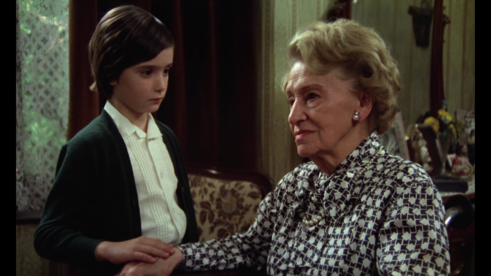

Cinema & Visual arts
I watch a lot of cinema and generally enjoy observing the reality through its visual component. Here I am going to collect some of the movies I find beautiful. I will also try to add my comments but this might take a while.

Cría cuervos (Raise ravens), 1976
dir. Carlos Saura